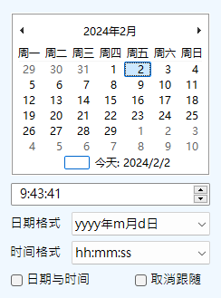
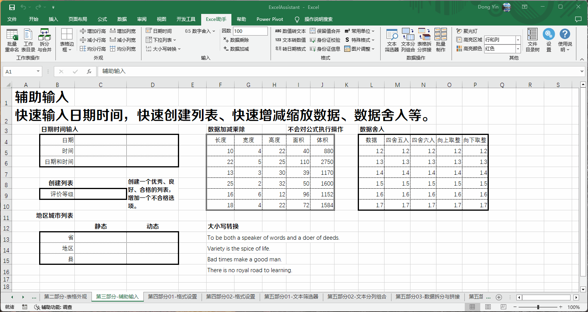
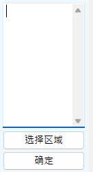
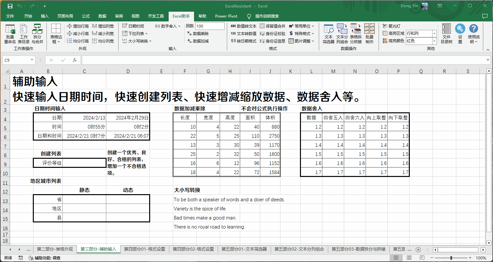
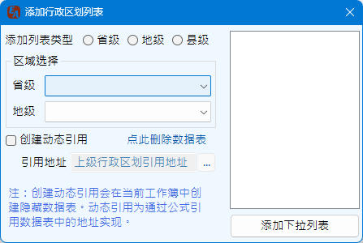
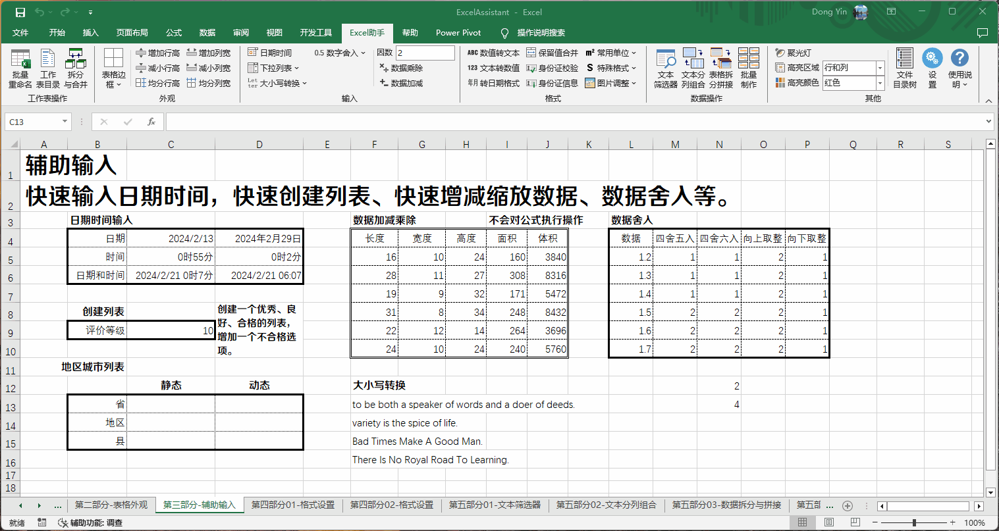
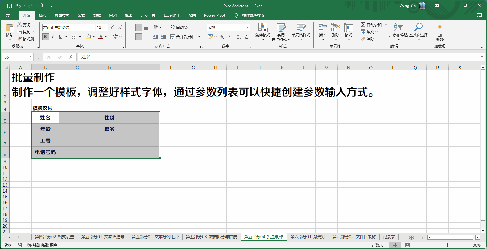
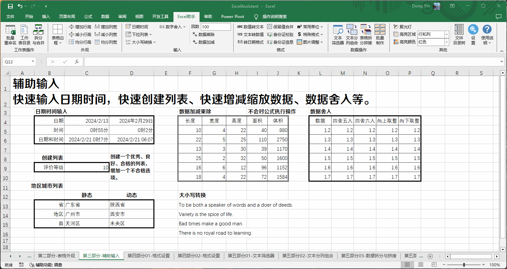

Excel助手Ribbon菜单中如下部分用于辅助输入，包括：快捷输入日期时间、快捷创建数据有效性列表、数据增减缩放、数据四舍五入等功能
此按钮为开关按钮，打开则调用出日期时间输入输入窗口，输入界面如下：
此功能旨在方便输入日期或者时间，点击上方的期日选择区，则会在活动单元格内容输入指定格式的日期，点击时间选择区，则会在活动单元格输入指定格式的时间。
如需要同时输入日期和时间，则需要勾选下方日期与时间选项，此时，无论点击日期选择区或者时间选择区，均在活动单元格格按指定的格式输入日期和时间。格式除预定的格式之外，可自行定义日期和时间格式，格式代码与Excel日期时间代码格式一致。
该输入窗口根据选择单元格的位置变化而变化，如不希望窗口跟随，点击取消跟随选项后，可按住界面非选择区拖动该窗口的位置。每当鼠标离开输入窗口后，窗口会根据设置的透明度显示为透明状态，直到鼠标再次进入窗口范围。透明度可在插件设置中设定。
当选择的单元格已存在日期或时间格式的数据时，窗口初始数据会采用当前活动单元格的数据。
选择输入后，按Enter键向下复制输入，按Ctrl+Enter组合键向右复制输入。
日期时间输入示例：
此功能下共有创建列表、删除列表验证、创建区划选择列表、参数列表几项功能。
点击添加列表按钮，在活动单元格下方将出现左图输入窗口。在窗口内添加要输入的列表内容，每行内容为一个选项，输入完成后，点击确定即可为选定单元格添加该列表的验证。内容输入框为空时点击确定，则退出本程序，并不添加任何列表。
序列数据源可以选择一个连续的单行或者单列区域作为序列的内容，或者定义的名称。选择区域或者引用名称后，程序只识别输入框第一行内容，后续的输入的数据将被忽略。在输入区域单击右键，可以插入当前可用的名称变量。
手动输入区域引用地址或名称时需以"="号开始，且单元格地址应为绝对地址，如引用其他工作表的区域时，还应带上工作表的名称，并以单引号引用，例如"='Sheet3'!$A$1:$A$10" 。区域引用不可跨工作簿引用。
点击删除列表按钮，可删除选择选择区域内已设置的有效性列表。
数据有效列表输入示例：
点击下拉列表下拉菜单中添加区划选择列表按钮，将调出如下用户界面。
通过界面选择省级、地级、县级选项以及区域选择，右侧列表框内将预览添加的下拉列表内容，点击添加下拉列表按钮，则可以为当前工作表选择区域单元格添加该内容的下拉列表。
创建动态引用，即列表内容会根据引用地址变化而变化，如县级列表引用地址为一个地级市名称，则当前县级列表内容会根据该地级市名称变化而变化，采用该方法创建列表需要在当前工作簿创建两个数据工作表，且为隐藏状态，对用户并不可见。
创建动态引用中地级、县级类型的列表，必须指定引用地址，引用地址的内容不能为空且内容必须为有效的数据内容（如为手动输入的内容，则内容必须与数据表中的内容一致）。用户可以通过界面删除隐藏数据表，但删除数据表后，相应的动态引用将会失效。
行政区划列表输入示例：
为配合批量制作功能提供的快捷参数输入方式，详见批量制作功能
参数列表输入示例：
类似于Excel中LOWER、UPPER、PROPER函数的功能，可以单元格英文字符转换为小写、大写或者首字母大写的类型，不同于函数功能的是，本程序将进行原位置转换，直接利用转换后的字符替代原字符。
该功能快捷的将选中范围内的数字进行舍入，模式包括四舍五入、四舍六入五向偶（即上一位是偶数则直接舍，上一位是奇数则进）、向上取整、向下取整四种模式。
此功能可将选定区域内的数值，采用给定的因数进行加法、乘法运算。因数可为正数、负数或者0， 当因数为负数时，可视为进行减法操作，当因数为小数时，可视为除法操作。加法运算对于选择范围内的数值型单元格或者日期类型单元格有效，乘法运算则仅对选择范围内的数值型单元格有效，其余类型单元格将被忽略。
其他输入功能示例：
开启后，程序可以根据选择的窗口进行连线，每次连线的起终点均为选择窗口的中心位置。对于需要设定线型的连线，请于开启连线模式之前通过Excel程序设置连线格式 ，然后设定为默认线条格式，之后再开启连线模式。
每当进入Ctrl多选区域时，或者整列选择、整行选择或者全表选择的状态下，连线模式默认忽略当前选择，直到下次单个区域选择或者关闭连线模式。
该功能可以将选定区域内的包含图片链接的图片文件加载到指定的位置。包括加载到链接所在的单元格，或者指定位置的单元格。支持的图片格式包括BMP，PNG，JPG，JPEG，TIFF，GIF几种。
加载图片文件的时候可以设定图片文件的尺寸大小，以厘米为单位，当设置为0cm的时候，视为不调整图片的大小。当只设置宽度或者高度时，另一个尺度将按照图片原本的高宽比进行缩放。
图片与单元格边框也可以设置一定的间隔，以磅为单位。在不超过单元格本身可调范围的情况下，程序会调整单元格的大小以容纳图片，一旦超出可调整范围，单元格将不会调整，与单元格间隔将只能体现在左边缘以及上边缘。高度限制0~409磅，宽度限制0~255字符宽度。插入图片的单元格，如果可以调整单元格高宽，则高度按每个图片的设定高度调整，但宽度在不指定，不统一的情况下，按最大宽度的图片调整。
当选择原位插入图片时，无论选择区域是多行或多列，均可以依次插入对应的图片；当选择在指定的位置插入图片时，将以选定区域的最左上单元格为起点，依次以行增加为方向插入单元格。当链接区域无有效的链接或者图片文件时，该插入单元格留空。
使用上述功能需注意如下事项：